About Me
Saya fokus membangun antarmuka website yang modern, responsif, dan mudah digunakan dengan .NET dan C#, Havit Blazor, serta PostgreSQL (dikelola melalui psql). Saya berkomitmen pada clean code, performa, dan pengalaman pengguna terbaik.
Saya seorang Frontend Website Engineer yang membangun antarmuka web dengan .NET dan C#, menggunakan Havit Blazor serta PostgreSQL sebagai database.
Saya fokus membangun antarmuka website yang modern, responsif, dan mudah digunakan dengan .NET dan C#, Havit Blazor, serta PostgreSQL (dikelola melalui psql). Saya berkomitmen pada clean code, performa, dan pengalaman pengguna terbaik.
Project terbaru ditampilkan lebih dahulu, diikuti project-project sebelumnya. Fokus teknologi saat ini: .NET, C#, Havit Blazor, dan PostgreSQL.
Fimoc adalah aplikasi disbursement yang membantu proses penyaluran dana dikelola dengan lebih terstruktur. Informasi dan perkembangan proses dapat dipantau dalam satu tempat, sehingga memudahkan tim terkait mengikuti status dan berkoordinasi.
Manage Service merupakan aplikasi untuk mendukung preventive maintenance dan audit layanan ISP. Aktivitas pemeliharaan serta informasi hasil audit dapat dikelola dan dipantau secara lebih terorganisir, membantu tim menjaga konsistensi kegiatan dan meninjau kondisi layanan.
Stocktrace adalah aplikasi inventory untuk membantu pengelolaan stok gudang secara terstruktur. Informasi persediaan dapat dipantau dengan lebih mudah, sehingga tim memiliki gambaran yang lebih jelas mengenai ketersediaan barang dan dapat mendukung aktivitas operasional gudang.
Website media review berbasis CMS WordPress. Menyediakan fitur manajemen konten, kategori, dan user-friendly untuk publikasi artikel review.
Website statis Sistem Informasi Pelayanan Laboratorium Pengujian & Sewa Alat Berat DPU PR menggunakan Native Programming. Menampilkan informasi layanan, jadwal, dan kontak secara interaktif dengan desain modern dan responsif.
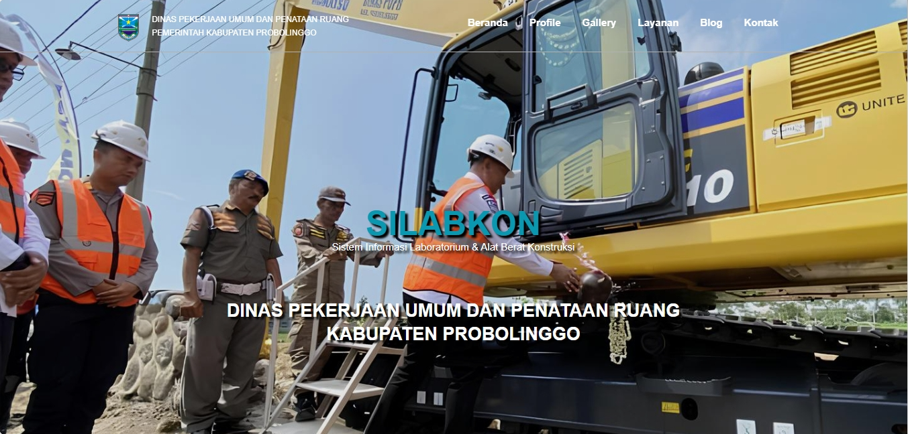
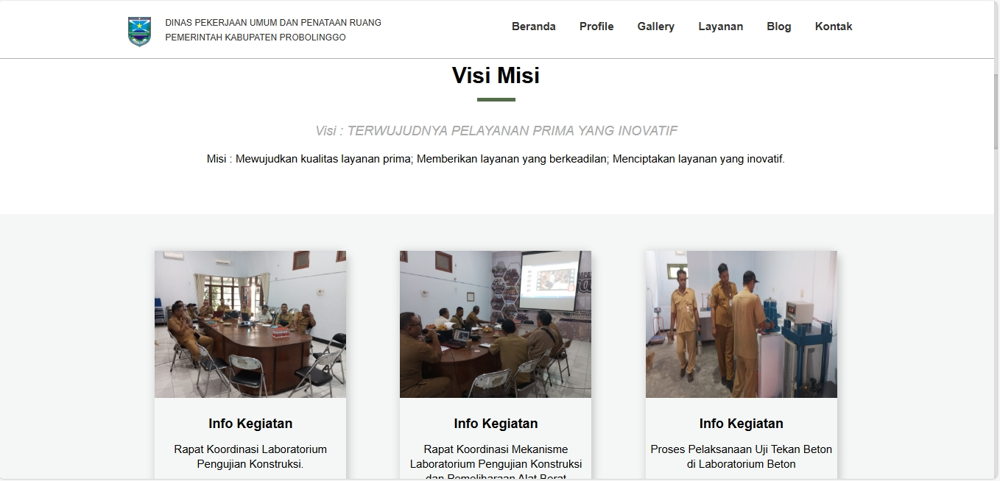
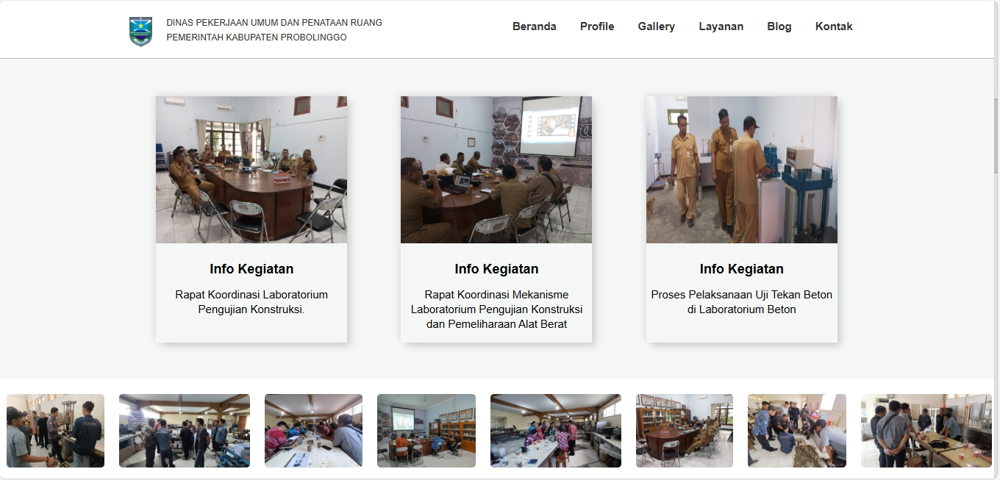
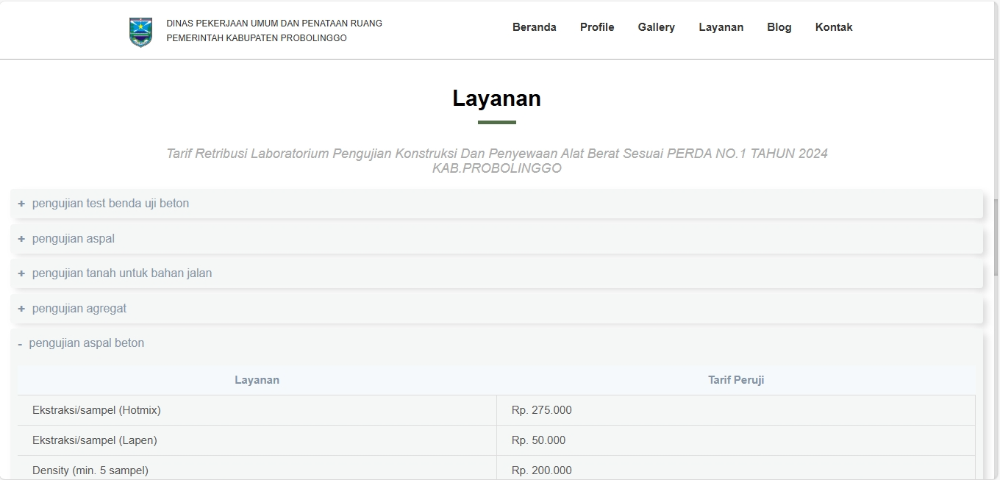
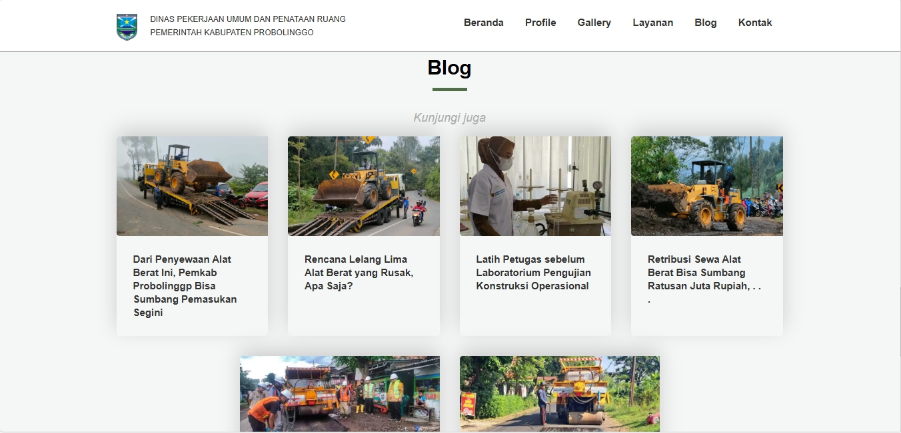
Aplikasi berbasis website untuk pelayanan uji etik penelitian kesehatan Universitas Nurul Jadid Paiton dengan teknologi Laravel 12, Tailwind CSS, dan NPM. Mendukung proses pengajuan, review, dan tracking status penelitian.
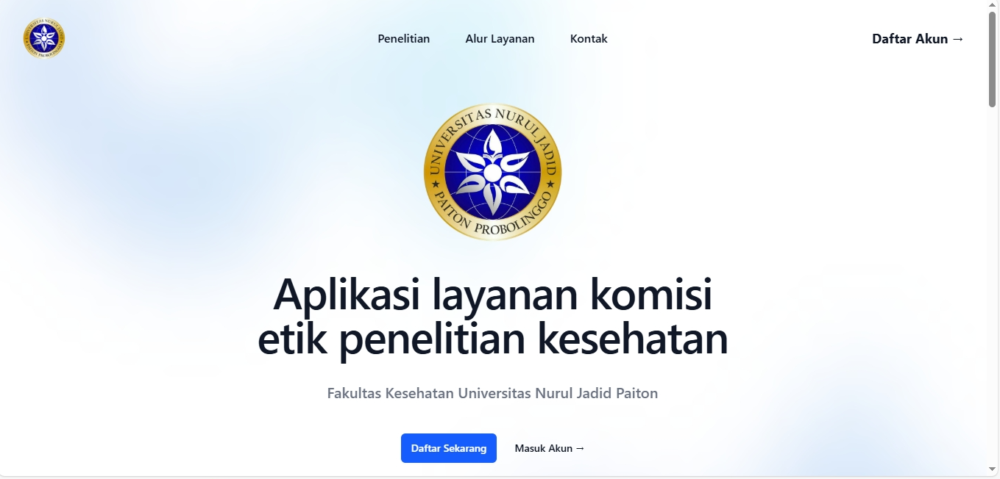
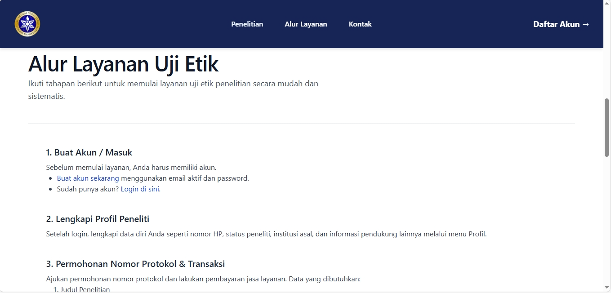
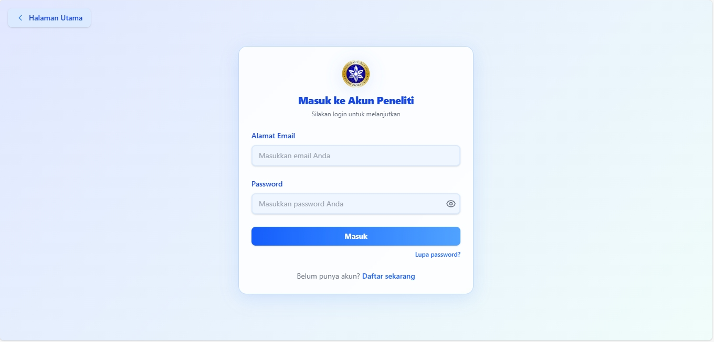
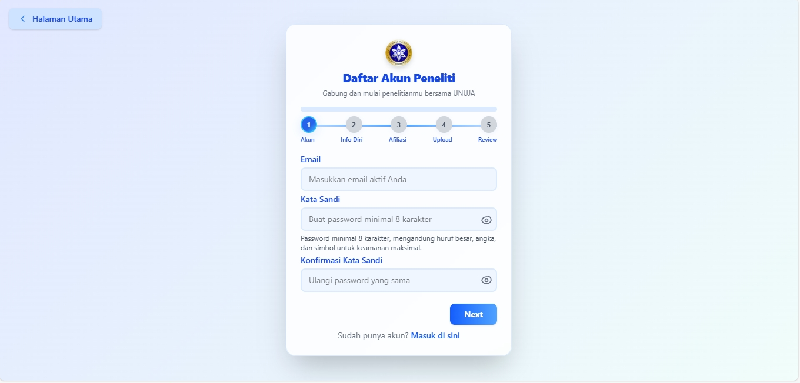
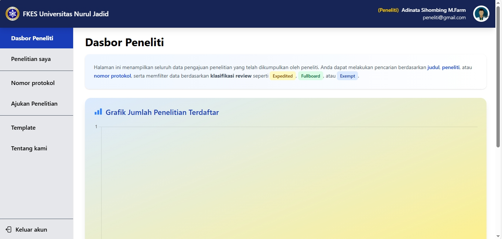
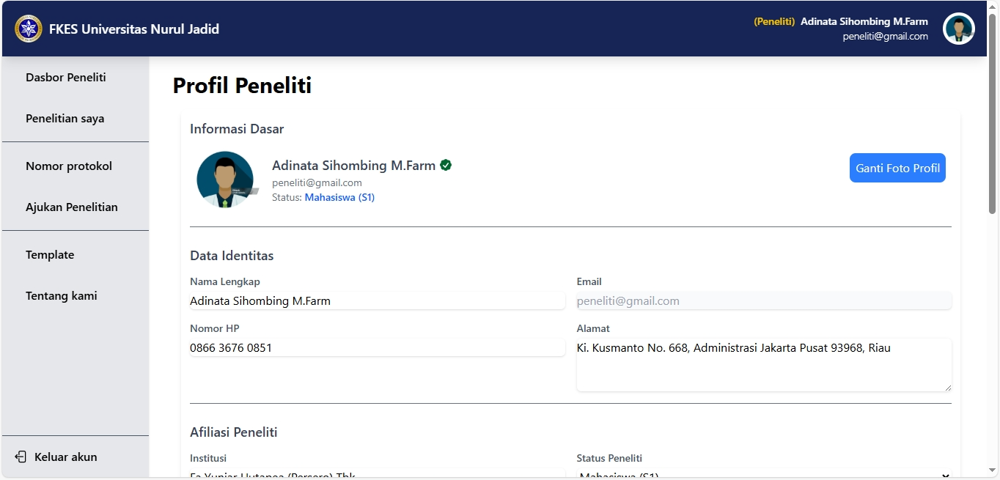
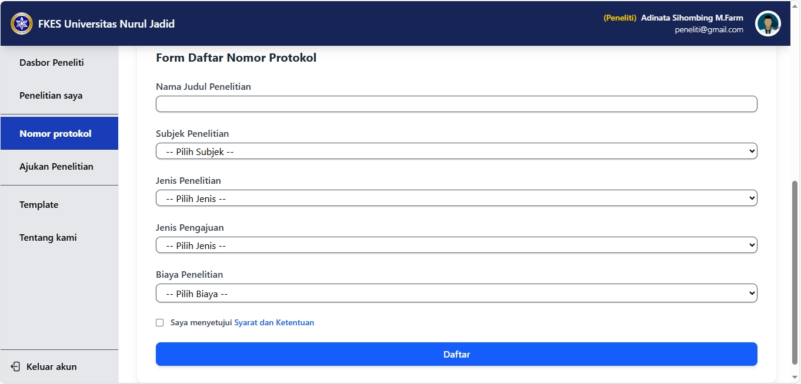
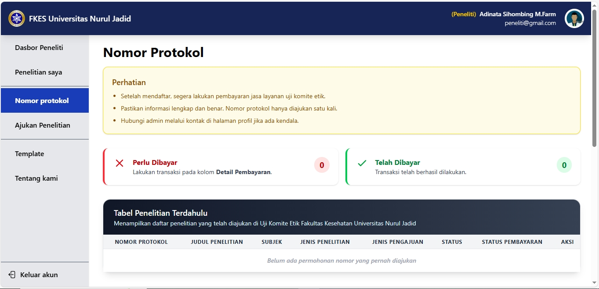
Silakan hubungi saya melalui kontak berikut untuk kerja sama, konsultasi, atau pertanyaan seputar project: